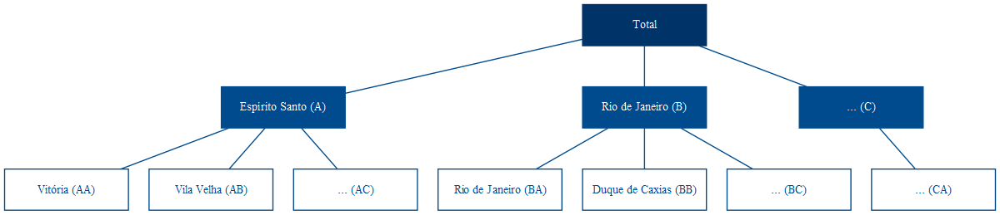
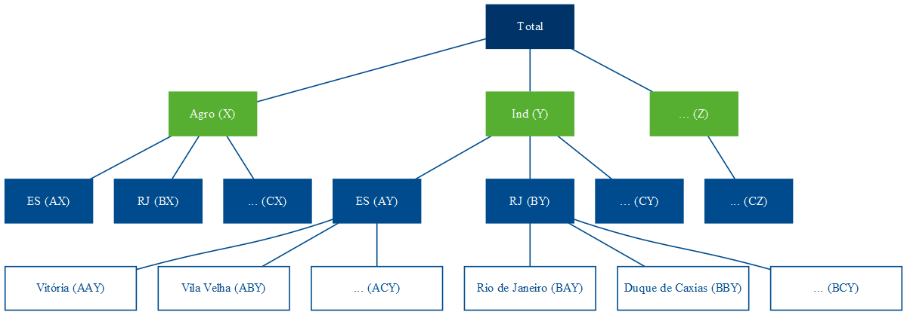
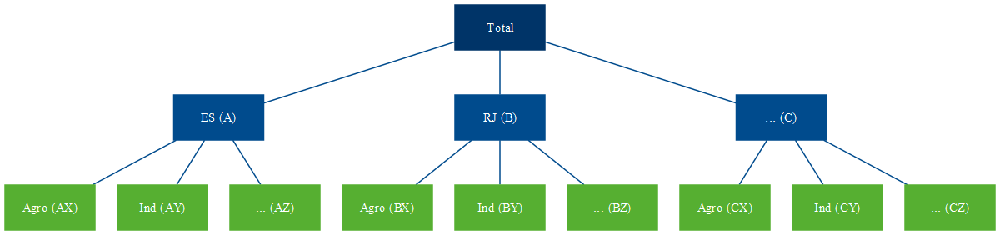

Já faz quase uma década que chega nessa época do ano e eu trabalho com previsões de séries temporais lá no Banestes. Na hora de estabelecer metas e objetivos orçamentários (saldos, receitas, despesas etc), saber modelar e fazer previsões é uma mão na roda.
Claro que sozinhas não devem ser adotadas como finais ou verdadeiras, uma vez que não usam da informação gerencial e expectativas dos stakeholders, por exemplo. Mas são um ponto de partida razoável que serve como base para elaborar e construir expectativas, plano de ação etc.
Séries temporais hierárquicas são aquelas que podem ser agregadas ou desagregadas naturalmente em uma estrutura aninhada (R. J. Hyndman and Athanasopoulos 2021). Para ilustrar, tome a série do PIB brasileiro. Ela pode ser desagregada por estado que, por sua vez, pode ser desagregada por município.

Figure 1: Séries Hierárquicas
Essa estrutura pode ser representada por equações para qualquer nível de agregação.
\[ \begin{align} y_t &= y_{A,t} + y_{B,t} + y_{C,t} \\ y_t &= y_{AA,t} + y_{AB,t} + y_{AC,t} + y_{BA,t} + y_{BC,t} + y_{CA,t} \\ y_{A,t} &= y_{AA,t} + y_{AB,t} + y_{AC,t} \end{align} \]
Assim, o agregado nacional pode ser representado apenas pelos agregados dos estados, através de (1), ou como o agregado dos municípios (2). Já o agregado para o estado do Espírito Santo é representado por (3).
Alternativamente, podemos descrever a estrutura completa de forma matricial:
\[ \begin{bmatrix} y_{t} \\ y_{A, t} \\ y_{B, t} \\ y_{C, t} \\ y_{AA, t} \\ y_{AB, t} \\ y_{AC, t} \\ y_{BA, t} \\ y_{BB, t} \\ y_{BC, t} \\ y_{CA, t} \end{bmatrix} = \begin{bmatrix} 1 & 1 & 1 & 1 & 1 & 1 & 1 \\ 1 & 1 & 1 & 0 & 0 & 0 & 0 \\ 0 & 0 & 0 & 1 & 1 & 1 & 0 \\ 0 & 0 & 0 & 0 & 0 & 0 & 1 \\ 1 & 0 & 0 & 0 & 0 & 0 & 0 \\ 0 & 1 & 0 & 0 & 0 & 0 & 0 \\ 0 & 0 & 1 & 0 & 0 & 0 & 0 \\ 0 & 0 & 0 & 1 & 0 & 0 & 0 \\ 0 & 0 & 0 & 0 & 1 & 0 & 0 \\ 0 & 0 & 0 & 0 & 0 & 1 & 0 \\ 0 & 0 & 0 & 0 & 0 & 0 & 1 \\ \end{bmatrix} \begin{bmatrix} y_{AA, t} \\ y_{AB, t} \\ y_{AC, t} \\ y_{BA, t} \\ y_{BB, t} \\ y_{BC, t} \\ y_{CA, t} \end{bmatrix} \]
Por outro lado, o PIB pode ser também desagregado de forma cruzada de acordo com a atividade econômica — lavoura, rebanho, indústria de transformação, extrativa, bens de capital, bens intermediários, comércio de vestuário, automotivos, serviços etc. Essa estrutura não pode ser desagregada naturalmente de uma única forma, como é a hierarquia de estados e municípios. Não pode ser aninhada por um atributo como a própria geografia. A esse tipo de estrutura dá-se o nome de séries agrupadas.
Figure 2: Séries Agrupadas
Combinando as duas, temos a estrutura de séries hierárquicas agrupadas. Ao contrário da estrutura hierárquica, que só pode ser agregada de uma forma — como com os municípios abaixo dos estados —, a adição da estrutura agrupada pode ocorrer tanto acima (Figura 3) quanto abaixo (Figura 4) da hierárquica.

Figure 3: Séries Hierárquicas Agrupadas (a)

Figure 4: Séries Hierárquicas Agrupadas (b)
Na notação matricial, a estrutura da Figura 4 é representada como abaixo. Formalmente, o primeiro membro da igualdade é composto pelo vetor \(\mathbf{y}_t\) \(n\)-dimensional com todas as observações no tempo \(t\) para todos os níveis da hierarquia. O segundo membro é composto pela matriz de soma \(\mathbf{S}\) de dimensão \(n \times m\) que define as equações para todo nível de agregação, e pela matriz \(\mathbf{b}_t\) composta pelas séries no nível mais desagregado.
\[\begin{equation} \mathbf{y}_t=\mathbf{Sb}_t \end{equation}\]
\[\begin{equation} \begin{bmatrix} y_{t} \\ y_{A, t} \\ y_{B, t} \\ y_{C, t} \\ y_{X, t} \\ y_{Y, t} \\ y_{Z, t} \\ y_{AX, t} \\ y_{AY, t} \\ y_{AZ, t} \\ y_{BX, t} \\ y_{BY, t} \\ y_{BZ, t} \\ y_{CX, t} \\ y_{CY, t} \\ y_{CZ, t} \end{bmatrix} = \begin{bmatrix} 1 & 1 & 1 & 1 & 1 & 1 & 1 & 1 & 1 \\ 1 & 1 & 1 & 0 & 0 & 0 & 0 & 0 & 0 \\ 0 & 0 & 0 & 1 & 1 & 1 & 0 & 0 & 0 \\ 0 & 0 & 0 & 0 & 0 & 0 & 1 & 1 & 1 \\ 1 & 0 & 0 & 1 & 0 & 0 & 1 & 0 & 0 \\ 0 & 1 & 0 & 0 & 1 & 0 & 0 & 1 & 0 \\ 0 & 0 & 1 & 0 & 0 & 1 & 0 & 0 & 1 \\ 1 & 0 & 0 & 0 & 0 & 0 & 0 & 0 & 0 \\ 0 & 1 & 0 & 0 & 0 & 0 & 0 & 0 & 0 \\ 0 & 0 & 1 & 0 & 0 & 0 & 0 & 0 & 0 \\ 0 & 0 & 0 & 1 & 0 & 0 & 0 & 0 & 0 \\ 0 & 0 & 0 & 0 & 1 & 0 & 0 & 0 & 0 \\ 0 & 0 & 0 & 0 & 0 & 1 & 0 & 0 & 0 \\ 0 & 0 & 0 & 0 & 0 & 0 & 1 & 0 & 0 \\ 0 & 0 & 0 & 0 & 0 & 0 & 0 & 1 & 0 \\ 0 & 0 & 0 & 0 & 0 & 0 & 0 & 0 & 1 \end{bmatrix} \begin{bmatrix} y_{AX, t} \\ y_{AY, t} \\ y_{AZ, t} \\ y_{BX, t} \\ y_{BY, t} \\ y_{BZ, t} \\ y_{CX, t} \\ y_{CY, t} \\ y_{CZ, t} \end{bmatrix} \end{equation}\]
Talvez as formas mais intuitivas de se pensar em previsões para esses tipos de estrutura sejam as abordagens top-down e bottom-up. Tome a estrutura descrita na Figura 1, por exemplo. Podemos realizar a previsão para o horizonte de tempo \(h\) do agregado do PIB brasileiro, representado no topo da hierarquia por Total (6), e então distribuir os valores previstos proporcionalmente entre os estados e municípios.
\[\begin{equation} \hat{y}_{T+h | T} = E[y_{T+h} | \Omega_T] \end{equation}\]
Essa é a abordagem top-down. Nela, a previsão para os níveis mais desagregados da hierarquia são determinadas por uma proporção \(p_i\) do nível agregado. Por exemplo, as previsões para Vitória são dadas pela equação (7).
\[\begin{equation} \tilde{y}_{AA, T+h | T} = p_{1}\hat{y}_{T+h | T} \end{equation}\]
Para isso, temos de definir uma matriz com todos esses pesos, que, seguindo a formulação de R. J. Hyndman and Athanasopoulos (2021), vamos chamar de \(\mathbf{G}\):
\[\begin{equation} \mathbf{G} = \begin{bmatrix} p_1 & 0 & 0 & 0 & 0 & 0 & 0 & 0 & 0 & 0 & 0 \\ p_2 & 0 & 0 & 0 & 0 & 0 & 0 & 0 & 0 & 0 & 0 \\ p_3 & 0 & 0 & 0 & 0 & 0 & 0 & 0 & 0 & 0 & 0 \\ p_4 & 0 & 0 & 0 & 0 & 0 & 0 & 0 & 0 & 0 & 0 \\ p_5 & 0 & 0 & 0 & 0 & 0 & 0 & 0 & 0 & 0 & 0 \\ p_6 & 0 & 0 & 0 & 0 & 0 & 0 & 0 & 0 & 0 & 0 \\ p_7 & 0 & 0 & 0 & 0 & 0 & 0 & 0 & 0 & 0 & 0 \end{bmatrix} \end{equation}\]
\(\mathbf{G}\) é uma matriz \(m \times n\) que multiplica a matriz \(\hat{\mathbf{y}}_{T+h|T}\) que, por sua vez, é composta pelas previsões base — as previsões individuais para todos os níveis de agregação. A equação para a abordagem top-down será, então:
\[\begin{equation} \mathbf{\tilde{y}}_{T+h | T} = \mathbf{SG\hat{y}}_{T+h | T} \end{equation}\]
Na notação matricial para a estrutura da Figura 1, temos:
\[\begin{equation} \begin{bmatrix} \tilde{y}_{t} \\ \tilde{y}_{A, t} \\ \tilde{y}_{B, t} \\ \tilde{y}_{C, t} \\ \tilde{y}_{AA, t} \\ \tilde{y}_{AB, t} \\ \tilde{y}_{AC, t} \\ \tilde{y}_{BA, t} \\ \tilde{y}_{BB, t} \\ \tilde{y}_{BC, t} \\ \tilde{y}_{CA, t} \end{bmatrix} = \mathbf{S} \begin{bmatrix} p_1 & 0 & 0 & 0 & 0 & 0 & 0 & 0 & 0 & 0 & 0 \\ p_2 & 0 & 0 & 0 & 0 & 0 & 0 & 0 & 0 & 0 & 0 \\ p_3 & 0 & 0 & 0 & 0 & 0 & 0 & 0 & 0 & 0 & 0 \\ p_4 & 0 & 0 & 0 & 0 & 0 & 0 & 0 & 0 & 0 & 0 \\ p_5 & 0 & 0 & 0 & 0 & 0 & 0 & 0 & 0 & 0 & 0 \\ p_6 & 0 & 0 & 0 & 0 & 0 & 0 & 0 & 0 & 0 & 0 \\ p_7 & 0 & 0 & 0 & 0 & 0 & 0 & 0 & 0 & 0 & 0 \end{bmatrix} \begin{bmatrix} \hat{y}_{T+h|T} \\ \hat{y}_{A, T+h|T} \\ \hat{y}_{B, T+h|T} \\ \hat{y}_{C, T+h|T} \\ \hat{y}_{AA, T+h|T} \\ \hat{y}_{AB, T+h|T} \\ \hat{y}_{AC, T+h|T} \\ \hat{y}_{BA, T+h|T} \\ \hat{y}_{BB, T+h|T} \\ \hat{y}_{BC, T+h|T} \\ \hat{y}_{CA, T+h|T} \end{bmatrix} \end{equation}\]
O que nos dá uma proporção do total para cada elemento no nível mais desagregado. \[\begin{equation} \begin{bmatrix} \tilde{y}_{t} \\ \tilde{y}_{A, t} \\ \tilde{y}_{B, t} \\ \tilde{y}_{C, t} \\ \tilde{y}_{AA, t} \\ \tilde{y}_{AB, t} \\ \tilde{y}_{AC, t} \\ \tilde{y}_{BA, t} \\ \tilde{y}_{BB, t} \\ \tilde{y}_{BC, t} \\ \tilde{y}_{CA, t} \end{bmatrix} = \mathbf{S} \begin{bmatrix} p_1\hat{y}_{T+h|T} \\ p_2\hat{y}_{T+h|T} \\ p_3\hat{y}_{T+h|T} \\ p_4\hat{y}_{T+h|T} \\ p_5\hat{y}_{T+h|T} \\ p_6\hat{y}_{T+h|T} \\ p_7\hat{y}_{T+h|T} \end{bmatrix} \end{equation}\]
Substituindo a matriz \(\mathbf{S}\), temos as equações que definem cada previsão da estrutura em função de proporções da previsão do agregado.
\[\begin{equation} \begin{bmatrix} \tilde{y}_{t} \\ \tilde{y}_{A, t} \\ \tilde{y}_{B, t} \\ \tilde{y}_{C, t} \\ \tilde{y}_{AA, t} \\ \tilde{y}_{AB, t} \\ \tilde{y}_{AC, t} \\ \tilde{y}_{BA, t} \\ \tilde{y}_{BB, t} \\ \tilde{y}_{BC, t} \\ \tilde{y}_{CA, t} \end{bmatrix} = \begin{bmatrix} 1 & 1 & 1 & 1 & 1 & 1 & 1 \\ 1 & 1 & 1 & 0 & 0 & 0 & 0 \\ 0 & 0 & 0 & 1 & 1 & 1 & 0 \\ 0 & 0 & 0 & 0 & 0 & 0 & 1 \\ 1 & 0 & 0 & 0 & 0 & 0 & 0 \\ 0 & 1 & 0 & 0 & 0 & 0 & 0 \\ 0 & 0 & 1 & 0 & 0 & 0 & 0 \\ 0 & 0 & 0 & 1 & 0 & 0 & 0 \\ 0 & 0 & 0 & 0 & 1 & 0 & 0 \\ 0 & 0 & 0 & 0 & 0 & 1 & 0 \\ 0 & 0 & 0 & 0 & 0 & 0 & 1 \end{bmatrix} \begin{bmatrix} p_1\hat{y}_{T+h|T} \\ p_2\hat{y}_{T+h|T} \\ p_3\hat{y}_{T+h|T} \\ p_4\hat{y}_{T+h|T} \\ p_5\hat{y}_{T+h|T} \\ p_6\hat{y}_{T+h|T} \\ p_7\hat{y}_{T+h|T} \end{bmatrix} \end{equation}\]
Já a abordagem bottom-up parte do raciocínio inverso e define as previsões de cada elemento da estrutura a partir das previsões dos elementos mais desagregados. Para tanto, basta modificar a matriz \(\mathbf{G}\).
\[\begin{equation} \mathbf{G} = \begin{bmatrix} 0 & 0 & 0 & 0 & 1 & 0 & 0 & 0 & 0 & 0 & 0 \\ 0 & 0 & 0 & 0 & 0 & 1 & 0 & 0 & 0 & 0 & 0 \\ 0 & 0 & 0 & 0 & 0 & 0 & 1 & 0 & 0 & 0 & 0 \\ 0 & 0 & 0 & 0 & 0 & 0 & 0 & 1 & 0 & 0 & 0 \\ 0 & 0 & 0 & 0 & 0 & 0 & 0 & 0 & 1 & 0 & 0 \\ 0 & 0 & 0 & 0 & 0 & 0 & 0 & 0 & 0 & 1 & 0 \\ 0 & 0 & 0 & 0 & 0 & 0 & 0 & 0 & 0 & 0 & 1 \end{bmatrix} \end{equation}\]
O que resulta nas equações desejadas. Portanto, \(\mathbf{G}\) define a abordagem — se top-down ou bottom-up —, e \(\mathbf{S}\) define a maneira da qual as previsões são somadas para formar as equações de previsão para cada elemento da estrutura.
\[\begin{equation} \begin{bmatrix} \tilde{y}_{t} \\ \tilde{y}_{A, t} \\ \tilde{y}_{B, t} \\ \tilde{y}_{C, t} \\ \tilde{y}_{AA, t} \\ \tilde{y}_{AB, t} \\ \tilde{y}_{AC, t} \\ \tilde{y}_{BA, t} \\ \tilde{y}_{BB, t} \\ \tilde{y}_{BC, t} \\ \tilde{y}_{CA, t} \end{bmatrix} = \begin{bmatrix} 1 & 1 & 1 & 1 & 1 & 1 & 1 \\ 1 & 1 & 1 & 0 & 0 & 0 & 0 \\ 0 & 0 & 0 & 1 & 1 & 1 & 0 \\ 0 & 0 & 0 & 0 & 0 & 0 & 1 \\ 1 & 0 & 0 & 0 & 0 & 0 & 0 \\ 0 & 1 & 0 & 0 & 0 & 0 & 0 \\ 0 & 0 & 1 & 0 & 0 & 0 & 0 \\ 0 & 0 & 0 & 1 & 0 & 0 & 0 \\ 0 & 0 & 0 & 0 & 1 & 0 & 0 \\ 0 & 0 & 0 & 0 & 0 & 1 & 0 \\ 0 & 0 & 0 & 0 & 0 & 0 & 1 \end{bmatrix} \begin{bmatrix} \hat{y}_{AA, T+h|T} \\ \hat{y}_{AB, T+h|T} \\ \hat{y}_{AC, T+h|T} \\ \hat{y}_{BA, T+h|T} \\ \hat{y}_{BB, T+h|T} \\ \hat{y}_{BC, T+h|T} \\ \hat{y}_{CA, T+h|T} \end{bmatrix} \end{equation}\]
Seja somando as previsões do nível mais desagregado para formar os níveis superiores da hierarquia (bottom-up) ou distribuindo proporcionalmente as previsões do nível mais agregado (top-down), o vetor \(\mathbf{\tilde{y}}_t\) representa as previsões coerentes. Isso significa que as previsões “batem”, ou seja, são totalizadas corretamente — as previsões de cada elemento agregado corresponde ao somatório das previsões dos níveis inferiores da hierarquia. Isso é garantido pela multiplicação das matrizes \(\mathbf{SG}\).
Não fosse essa pré multiplicação, nada garantiria a coerência das previsões. Tomando a estrutura da Figura 1 como exemplo, seria um acaso improvável que as previsões do agregado para o estado do Espírito Santo fossem exatamente a soma das previsões individuais de seus municípios. Isso porque cada série pode seguir um processo diferente (e.g., arima) com erros e variâncias distintas.
Os métodos de gerar previsões coerentes a partir de previsões base são chamados de métodos de reconciliação. Os métodos de reconciliação tradicionais apresentados, top-down e bottom-up, utilizam informação limitada. No método top-down, utiliza-se apenas informações do nível mais agregado — por isso, apenas a primeira coluna em (8) é diferente de zero. Já na abordagem bottom-up, utiliza-se apenas as informações dos níveis mais desagregados, o que resulta na submatriz identidade \(m \times m\) em (13), enquanto as colunas que representam os níveis mais agregados são nulas.
Alternativamente, podemos pensar numa matriz \(\mathbf{G}\) qualquer que utilize toda a informação disponível e tenha algumas propriedades que garantam que as previsões coerentes tenham o menor erro o possível. Esse é o problema de pesquisa trabalhado na reconciliação ótima, e é um assunto relativamente novo. Quer dizer, previsões pontuais de séries temporais hierárquicas é um troço antigo. Ao menos desde a década de 70, pesquisas foram publicadas acerca de abordagens bottom-up e top-down, suas vantagens e desvantagens, e tentativas de se definir qual é o melhor método1. Entretanto, é apenas em R. J. Hyndman et al. (2011) que é formalizada uma abordagem prática que utiliza toda a informação disponível, (i.e. as previsões de todos elementos de todos os níveis da hierarquia) a partir da estimação da matriz \(\mathbf{G}\) via regressão linear por mínimos quadrados generalizados (MQG).
Entretanto, para ser capaz de estimar o modelo por MQG, é necessária a matriz de variância-covariância dos erros. R. J. Hyndman et al. (2011) usam a matriz de erros de coerência, ou seja, a diferença entre as previsões reconciliadas e as previsões base, que tem posto incompleto e não identificada e, portanto, não pode ser estimada. Os autores contornam esse problema adotando no lugar da matriz de variância-covariância dos erros uma matriz diagonal constante, ou seja, assumem variância constante dos erros de reconciliação, o que acaba caindo na estimação de \(\mathbf{G}\) por mínimos quadrados ordinários (MQO).
A estimação por esse método resulta numa reconciliação ótima que depende apenas da matriz \(\mathbf{S}\), ou seja, da estrutura hierárquica, e independe da variância e covariância das previsões base \(\mathbf{\hat{y}_{T+h}}\) — o que não é uma conclusão satisfatória.
Rob J. Hyndman, Lee, and Wang (2016) tentam aperfeiçoar o método usando as variâncias das previsões base estimadas (dentro da amostra) como estimativa para a matriz de variância-covariância dos erros de reconciliação, de forma a as utilizar como pesos e realizar a reconciliação ótima por mínimos quadrados ponderados (MQP). Assim, previsões base mais acuradas têm peso maior do que as mais ruidosas. Entretanto, não fornecem justificativa teórica para usar a diagonal da matriz de variância-covariância de \(\mathbf{\hat{e}_{t}}\).
Wickramasuriya, Athanasopoulos, and Hyndman (2019) argumentam que o que de fato interessa é que as previsões reconciliadas tenham o menor erro — não interessa que a previsão reconciliada seja mais próxima da previsão base, mas que as reconciliadas sejam as mais precisas o possível, já que é a que se vai utilizar!. Então, corrigem a abordagem de reconciliação ótima para o objetivo de minimização dos erros das previsões reconciliadas \(\mathbf{\tilde{e}_{t+h}} = \mathbf{y_{t+h} - \mathbf{\tilde{y}_{t+h}}}\), ao invés dos erros de reconciliação das previsões base \(\mathbf{\hat{y}_{t+h}} - \mathbf{\tilde{y}_{t+h}}\). Dado que isso implica na minimização da variância de \(\mathbf{\tilde{e}_{t+h}}\), ou seja, na minimização do somatório da diagonal, o traço, da matriz de variância-covariância de \(\mathbf{\tilde{e}_{t+h}}\), eles chamaram esse método de Menor Traço (MinT, na sigla em inglês). Paralelamente, usam desigualdade triangular para demonstrar que as previsões reconciliadas obtidas por esse método são ao menos tão boas quanto as previsões base.
E, de 2021 pra cá, há desenvolvimentos interessantes na extensão probabilística desse corpo teórico (e é onde estou realizando minha pesquisa de mestrado). Panagiotelis et al. (2021) reinterpreta a literatura de coerência e reconciliação de previsões pontuais a partir de uma abordagem geométrica, trazendo provas alternativas para conclusões anteriores ao mesmo tempo em que fornece novos teoremas. Além disso, Panagiotelis et al. (2021) estende essa interpretação geométrica para o contexto probabilístico, fornecendo métodos paramétricos e não paramétricos (via bootstrapping) para reconciliação de previsões probabilísticas, ou seja, para reconciliar previsões \(\hat{y}_t\) obtidas a partir de toda a distribuição, e não apenas a média.
Se você chegou até aqui, recomendo que arrume algo mais interessante pra fazer da vida. No próximo post (talvez) eu trago como fazer esse troço todo na prática com nosso queridão #RStats.
{{% citacao %}}